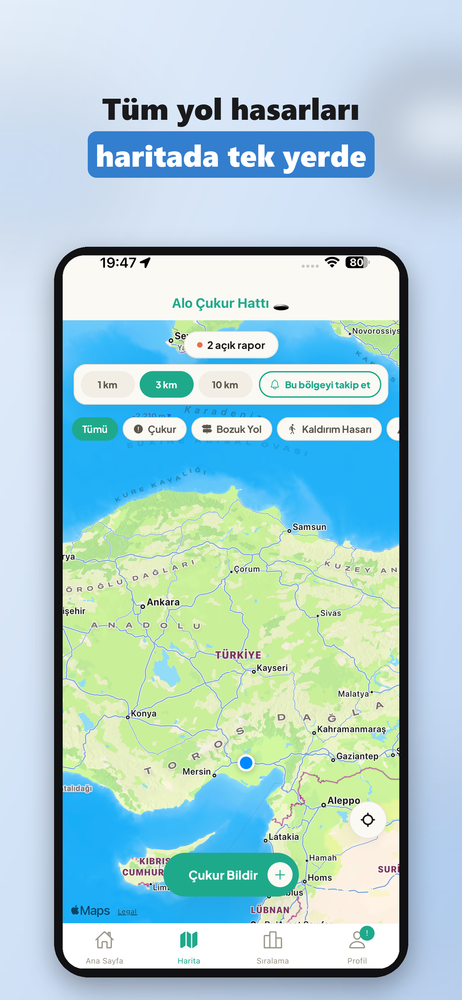

1
Fotoğraf çek
Çukur, bozuk yol, kaldırım veya su birikintisini belgeleyin.
Alo Çukur Hattı ile yol hasarını fotoğrafla, konumunu işaretle ve herkesin görebileceği haritaya ekle.

Çukur, bozuk yol, kaldırım veya su birikintisini belgeleyin.
GPS ile otomatik al, gerekirse haritada noktasını düzelt.
Aynı sorunu görenler destek versin, rapor takip edilsin.